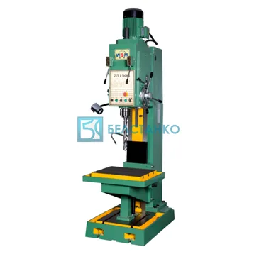
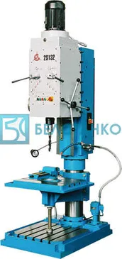
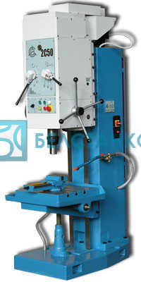
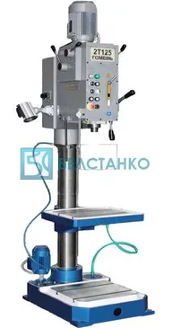
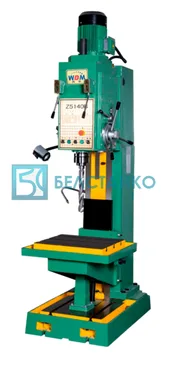
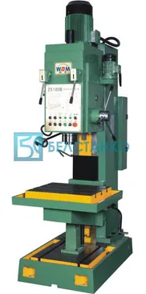
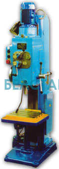

Z5030
Вертикально-сверлильный станок
520 000 ₽Вертикально-сверлильный станок
520 000 ₽
Вертикально-сверлильный станок
1 128 000 ₽
Станок вертикально-сверлильный
Цена по запросу

Станок вертикально-сверлильный
1 050 000 ₽

(2С50/60) Станок вертикально-сверлильный
1 200 000 ₽
Станок вертикально-сверлильный
1 234 236 ₽
Вертикально-сверлильный станок
1 391 328 ₽
Вертикально-сверлильный станок
2 255 940 ₽Вертикально-сверлильный станок
660 000 ₽
Вертикально-сверлильный станок
714 000 ₽
Вертикально-сверлильный станок
828 000 ₽
Вертикально-сверлильный станок
1 140 000 ₽
Вертикально-сверлильный станок
2 430 000 ₽
Вертикально-сверлильный станок
2 598 000 ₽
Вертикально-сверлильный станок
948 000 ₽